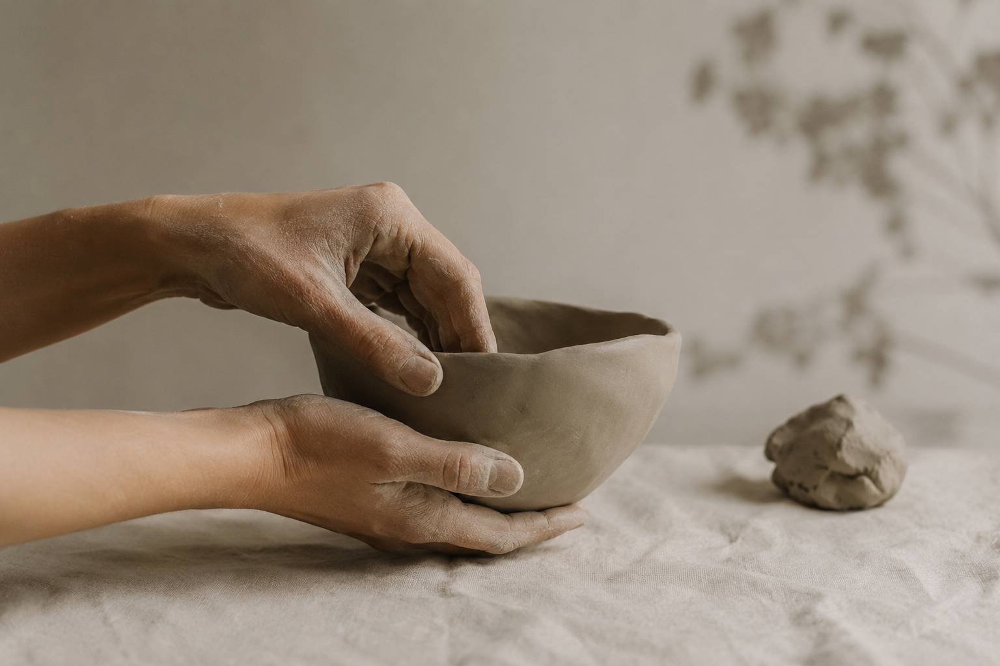
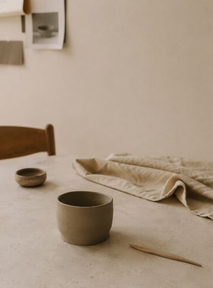
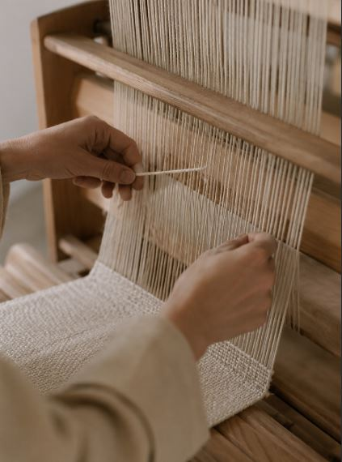

En una época dominada por la producción acelerada y el consumo digital, la artesanía vuelve a ocupar un espacio esencial dentro del diseño contemporáneo. Las jornadas de artesanía organizadas en Valencia nacen precisamente de esta necesidad: recuperar los procesos lentos, materiales y humanos detrás de cada objeto.
Durante tres días, diseñadores, ceramistas, tejedores y artesanos compartirán experiencias alrededor de los oficios tradicionales y su adaptación a nuevos contextos culturales y tecnológicos.
El programa incluye talleres abiertos, ponencias y demostraciones en directo donde el público podrá observar procesos manuales de producción y participar activamente en ellos.
“La artesanía no representa nostalgia: representa otra manera de pensar el tiempo, los materiales y las relaciones humanas.”
Más allá del objeto final, las jornadas ponen el foco en el valor cultural del proceso: aprender, observar y construir desde la proximidad y el conocimiento compartido.


Actividades destacadas
- Taller de cerámica tradicional
- Demostración de técnicas textiles mediterráneas
- Charlas sobre diseño sostenible y producción local
- Mercado artesanal de creadores valencianos